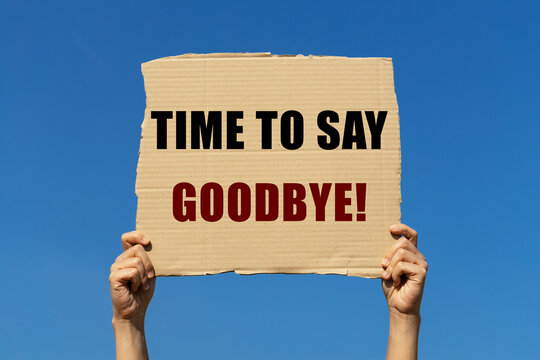

Dag 5
Dag 5 de laatste. Om heel eerliijk te zijn was mijn laatste dag stage niet zo speciaal ik heb gewoon weer wat laptops klaargemaakt maar dat is niet erg want een rustige dag is ook een goede dag. Ik wil graag iedereen bij FTC PGeneration nogmaals bedanken voor deze kans, de leuke, de leerijke en de gezellige dagen.
